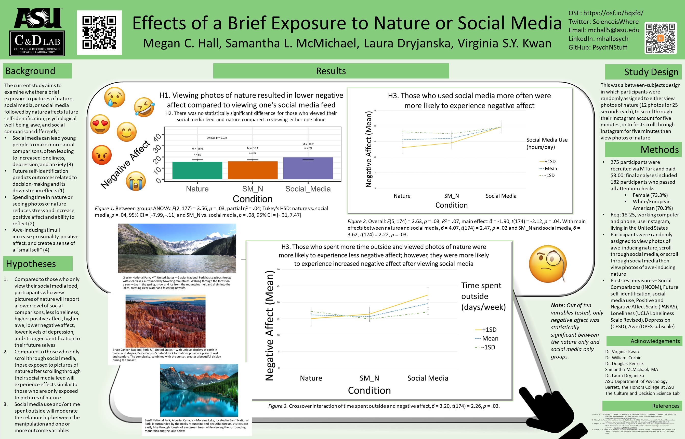

Have you ever marveled at the sight of a beautiful beach, a grand forest, or a deep canyon? Have you been stuck scrolling through social media, stressfully comparing yourself and your accomplishments to that of others around you? I have done both of these things.
I had already been a research assistant in Dr. Virginia Kwan’s Culture and Decision Science Network lab for over two years before I began working on my undergraduate thesis. I began working on my undergraduate thesis in early 2020, and noticed that many of my peers spent more time on social media and less time in nature. I wanted to study the effects of nature, when viewed online, on psychological well-being. Specifically, I wanted to know if spending time on social media caused negative effects for psychological well-being, and if so, whether viewing photos of nature could mitigate this effect.
People have been increasingly using social media and other forms of technology to connect with one another, and the literature on this is mixed. I was curious about nature photos as a potential buffer to negative effects of social media because viewing nature has previously been shown to decrease stress and increase attention, but studies are mixed regarding its efficacy online vs. offline. In addition, it can be hard for many to get away from an urban area and access nature in-person. A low-cost intervention that relieves the stress of social media and is accessible through technology would be helpful.
This project is based in psychology and included preregistration on the Open Science Forum where methods and data are stored and can be requested. The project helped me learn basic scientific writing skills, the process of IRB submissions and online data collection, and a vast amount of research methodology.
We found that, when viewing nature photos versus their own social media feeds, 182 participants recruited on Amazon Mechanical Turk only experienced a statistically significant difference in one out of ten scales when conducting an ANOVA and Tukey’s post-hoc test; specifically, for negative affect. Full results are published online. Statistical analysis used IBM SPSS 25; R version 3.4.1 was used to make barplots. Reproducible code is stored on GitHub.
In this project I was able to design, implement, write, and present a study in its entirety.